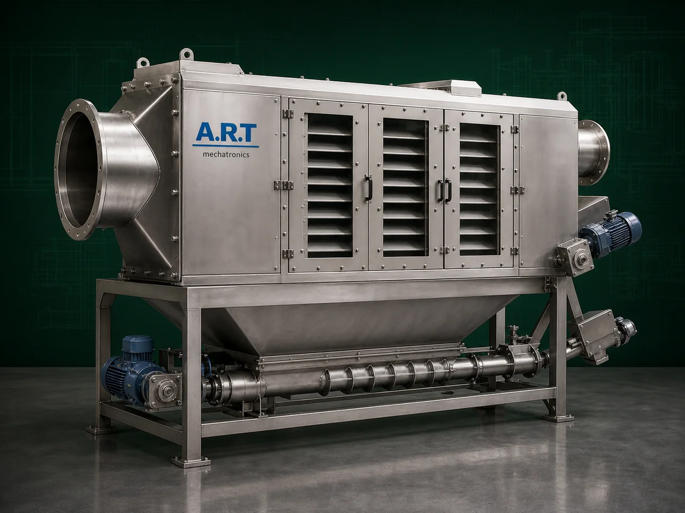

Dust Separator Machine (Industrial Dust & Fine Particle Separation System)
A Dust Separator Machine, also known as an Industrial Dust Separation System, Air Dust Separator, or Fine Particle Separator, is an essential industrial equipment designed for separating dust, fine particles, airborne impurities, powder particles, and lightweight contaminants from air streams or bulk materials.

About the Dust Separator
The machine improves:
- Air quality
- Product purity
- Workplace cleanliness
- Machine efficiency
- Environmental compliance
Dust separator systems are widely used in industries such as:
Food processing
Pharmaceuticals
Chemicals
Grain processing
Spice industries
Woodworking
Cement industries
Minerals
Recycling industries
where dust control, fine particle recovery, and clean processing environments are critical.
The machine works using various separation technologies such as:
- Cyclonic separation
- Airflow classification
- Gravity separation
- Filtration systems
- Centrifugal separation
depending on the application and dust characteristics.
Dust separator machines are suitable for:
- Powder recovery
- Air purification
- Dust extraction
- Fine particle separation
- Pneumatic conveying systems
- Material handling lines
ART Mechatronics offers high-performance dust separator machines, engineered for efficient dust removal, low maintenance, energy-efficient operation, and reliable industrial performance.
Working Principle of Dust Separator Machine
Dust-contaminated air or material stream enters separator chamber
Depending on machine type, separation occurs using:
- Cyclonic airflow
- Centrifugal force
- Air velocity reduction
- Filtration mechanisms
Fine particles separate from clean air stream
Heavy particles fall downward Fine dust separated from airflow
Clean air exits through outlet system or filtration section
Dust particles collected in hopper or collection chamber
Valuable fine powders can be recovered and reused
Types of Dust Separator Machines
- 1. Cyclone Dust Separator
Uses: ✔ Cyclonic centrifugal force for separating dust and fine particles from airflow.
- 2. Air Dust Separator Machine
Uses: ✔ Controlled airflow separation for lightweight impurity removal.
- 3. Fine Powder Separator
Designed for:
- Powder recovery
- Fine particle classification
- 4. Gravity Dust Separator
Uses: ✔ Gravity-based particle settling for coarse dust separation.
- 5. Multi Cyclone Dust Separator
Suitable for: ✔ High-capacity industrial dust handling systems
- 6. Integrated Dust Separator System
Works with:
- Pulverizers
- Conveyors
- Mixers
- Screening systems
- Pneumatic conveying plants
Industries Using Dust Separator Machine
🍃 Food Processing Industry Flour and spice dust separation 💊 Pharmaceutical Industry Powder recovery and dust control ⚗️ Chemical Industry Chemical powder separation 🌾 Grain Processing Industry Grain dust extraction 🌶️ Spice Industry Masala dust collection and separation 🪵 Woodworking Industry Sawdust separation and collection 🏗️ Cement & Construction Industry Cement dust handling systems ⛏️ Mineral Industry Fine mineral particle separation
Features & Advantages
- Efficient dust and fine particle separation
- Improves workplace air quality
- Reduces airborne contamination
- Protects industrial machinery
- Improves environmental compliance
- Continuous industrial operation
- Heavy-duty industrial construction
- Low maintenance requirement
- Energy-efficient dust handling system
Technical Highlights
Separation Technology: Cyclonic separation Air separation Gravity separation Filtration systems Construction: Stainless Steel / Mild Steel Dust Collection: Hopper collection Bag collection Integrated filtration Integration: Blower system Pneumatic conveying Dust collector systems Operation: Manual Semi-automatic Fully automatic
Turnkey Dust Separation Solutions
ART Mechatronics offers: Complete dust separator systems Cyclone and filtration integration Pneumatic conveying integration Dust collection and air handling systems Installation & commissioning After-sales service & AMC
Why Choose Art Mechatronics
Expertise in industrial dust handling and separation systems Customized solutions for multiple industries High-performance and durable machine construction Energy-efficient and reliable industrial designs Proven industrial performance across sectors
Applications
Food Processing Plants Pharmaceutical Manufacturing Units Chemical Processing Industries Grain & Spice Processing Plants Cement & Construction Industries Mineral Processing Facilities
Related Cleaning, Sorting & Grading machines
Get pricing & specs for the Dust Separator
Share the product, target capacity, current process and plant location. These details help our engineers discuss the right machine or line configuration.
One partner, from design to start-up
ART Mechatronics designs, manufactures, installs and commissions your Dust Separator solution with regional presence in India, UAE and Thailand.